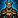
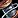
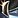

This guide is designed to help you explore the various Leatherworking specializations in War Within, ensuring you get the most out of your Leatherworking experience.
I'll walk you through each specialization, suggesting the best ways to allocate your points and pointing out which paths might be less beneficial. By the end, you'll have a solid foundation to begin crafting your own build.
Table of contents
Leatherworking Specializations
War Within introduces four new Leatherworking specializations, unlocked at levels 25, 50, 60 and 75. Each one offers unique perks that can significantly impact how you approach Leatherworking.
Here's a quick look at the four main Leatherworking specializations. Each one hones in on a specific aspect of Leatherworking
Learned Leatherworker
This specialization focuses on boosting your Ingenuity, Resourcefulness, or Multicraft. It also enhances your Ingenuity to refund more Concentration, up to a maximum of 100%.
Basically, this is the specialization you'd start investing in after you've already built a solid foundation in the other specializations. It allows you to optimize your build even further. I'd recommend putting points here only after you've spent some points in the other specialization.
Luxurious Leathers and Concrete Chitin
These are the two basic gear trees for Leather and Mail gear, similar to those from Dragonflight. If you're focused on crafting gear, whether embellished or normal gear, you'll need to invest points into these trees. They're essential for anything related to gear crafting.
Flawless Fortes
This specialization focuses on crafting Embellished gear, Profession Equipment, Leatherworking Reagents, and Leg Enchants.
Max Quality and Concentration
Before diving into how to spend your knowledge points, it's important to understand the role of Concentration, so you understand why I believe it's important to specialize in one recipe and prioritize boosting your Leatherworking skill first.
Concentration lets you craft an item at a quality one tier higher than your base skill would normally allow. The amount of Concentration required depends on how much skill you're missing, but there is always a minimum amount of Concentration that you have to spend.
For instance, even if you're only short by 1 skill point, you'd still need around 150-300 Concentration to craft max rank item (depends on if it's gear or consumable). Since Concentration regenerates at about 240 points daily, you're limited to crafting 1-2 item per day at max quality until you max out your build. (unless you get lucky with Ingenuity procs).
Dedicated Crafters
If crafting is your main focus, aim to master at least one recipe to the point where you don't need to use Concentration. This will allow you to craft more efficiently and handle larger orders without waiting for cooldowns.
Casual Crafters
If crafting is more of a leisurely activity for you and you're not planning to produce large quantities, it's okay to diversify and learn a variety of recipes. However, even for casual crafters, starting with a strong foundation in one area is generally more effective before expanding into others.
Crafting Orders
One important thing to keep in mind is that all high-end gear crafted through Leatherworking is Bind on Pickup (BoP).
Unfortunately, public crafting orders haven't gained much popularity among players in Dragonflight, and I don't expect this to change in The War Within. Many players prefer guild or personal crafting orders for better control over item quality. The unpredictability of public orders deters players from using this system, resulting in very few available public orders.
This means that if you want to craft gear for others and not just for yourself, you'll need to use the Personal Crafting Order system. This involves interacting with other players through the trade channel.
Choosing a Specialization Build
Below are a two sample builds tailored to common playstyles. Pick the one that fits your playstyle best, and feel free to tweak it to suit your needs.
The numbers below aren't a ranking of how good each build is; they're just there to help you navigate the guide more easily.
1. Crafting Gear for Personal Use
This build focuses on maximizing your skill in crafting high-quality leather or mail armor.
2. Selling Reagents or Leg Enchants
For those who want to specialize in crafting and selling Leatherworking Reagents and Leg Enchants, this build is perfect.
Build 1: Crafting Gear for Personal Use
Thanks to the new Concentration mechanic, you don't need to invest too many points in any category to craft top-quality armors. You won't be able to produce many of them since Concentration regenerates slowly, but that's okay because you'll be limited by the Spark of Omen, a Bind on Pickup (BoP) crafting reagent. You only get one every two weeks.
First, pick the specialization that aligns with the armor type your class can equip: Luxurious Leathers for Leather wearers and Concrete Chitin for Mail wearers.
Deciding on Armor Slot
Each sub-specialization tree will teach you an epic armor recipe for its specific slot. There are two main sub-specializations, each branching out into four different armor slots.
You can't really go wrong with any of them. Just choose the one that appeals to you the most.
- Left Side: Chest, Head, Shoulder, Wrist
- Right Side: Legs, Hands, Waist, Feet
Embellished Armors
Embellished have unique effects and set bonuses, so if you have these recipes or you want to farm them, it's smart to focus on the slot these Embellished occupy.| Item | Slot | Type | Recipe Source |
|---|---|---|---|
| Wrist | Leather | Drop: | |
| Hands | Leather | Drop: Voidstone Monstrosity Dungeon: The Rookery | |
| Waist | Leather | Drop: Sikran, Captain of the Sureki Raid: Nerub-ar Palace | |
| Feet | Leather | Drop: Prioress Murrpray Dungeon: Priory of the Sacred Flame | |
| Wrist | Drop: World Creatures | ||
| Hands | Quest: | ||
| Waist | Drop: Goldie Baronbottom Dungeon: Cinderbrew Meadery | ||
| Feet | Delves: Heavy Trunk |
Example Build:
I'll use the Mail Chest slot as an example. Both Leather and Mail specializations work the same way, and the process for unlocking armor is identical for each slot. Just mirror these steps in other sub-specializations.
Adjust the sub-specializations according to the item you choose. This is just an example.

Concrete Chitin (10 points) - Invest 10 points into the center node to unlock a sub-specialization.- Large Chitin - The chests are on the left side, so pick the left sub-specialization.
- Large Chitin (10 points) - Invest 10 points to unlock a subspec.
 Breastplates - Since you're focusing on the Chest slot, choose the right sub-specialization to learn the recipe (check the description for each). You'll eventually learn all the recipes in the sub-specialization, so you're not limited to just one.
Breastplates - Since you're focusing on the Chest slot, choose the right sub-specialization to learn the recipe (check the description for each). You'll eventually learn all the recipes in the sub-specialization, so you're not limited to just one.- Breastplates (+20) - Invest 20 points in Breastplates to gain a significant +skill bonus.
- Large Chitin (+20 points) - Invest another 20 points into Large Chitin to unlock every armor recipe in this sub-specialization.
Now, at this point, you can already craft the Chest at max quality using Q3 materials and Concentration. If you want to focus on crafting more armor or crafting the Chest without Concentration, then you would invest another 20 points into the center node Concrete Chitin.
From there, you can fill out the trees as you see fit.
2. Selling Reagents or Leg Enchants
We will focus on the Flawless Fortes first, as you will get the most extra skill from there, so we reach guaranteed Q3 sooner.
 Flawless Fortes (10 points) - Invest 10 points to unlock a sub-specializations.
Flawless Fortes (10 points) - Invest 10 points to unlock a sub-specializations.- Spotless Stitching - Pick Spotless Stitching, this is the one that focuses on Leg Armors and Reagents.
- Spotless Stitching (30 points) - Invest 30 points into Spotless Stitching to gain a significant +skill bonus, Multicraft and some Ingenuity.
- Flawless Fortes (+20 points)
Now, if you have Blue Quality profession tools, you can already craft Reagents or Leg Enchants at max quality using Q3 materials. At this point, you can switch to the Learned Leatherworker specialization and start focusing on boosting your Multicraft, Resourcefulness, and Ingenuity.
The only variable in the build is the order in which you prioritize further improvements. You could opt to increase Ingenuity before focusing on Resourcefulness, but I believe Multicraft offers the best returns. When Ingenuity procs, the bonus is that you get to craft another item. However, when Multicraft procs, all the extra items are pure profit.
The reasoning for investing in some Ingenuity is that it allows you to use your Concentration with Q2 materials more often, maximizing your profits.
- Learned Leatherworker (5 points) - Invest 5 points into the Learned Leatherworker specializations to unlock a sub-specialization.

Industrious Innovations - Pick this sub-specialization on the right.- Industrious Innovations (30 points) - Invest 30 points to gain extra Multicraft, and to get more items from Multicraft procs.
- Learned Leatherworker (+10 points) - Invest 10 points to unlock the second sub-specialization.

Waste Not - Pick this sub-specialization on the left.- Waste Not (30 Points) - Invest 30 points to gain extra Resourcefulness, and to refund more materials from Resourcefulness procs.
- Learned Leatherworker (+15 points) - Invest 15 points to unlock the final sub-specialization.
- Commanding Concentration (30 points) - Invest 30 points to gain more Ingenuity and to get more Concentration back when Ingenuity procs.
Your build is now fully complete.